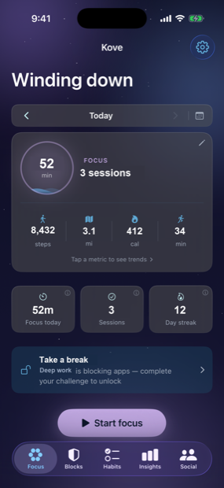
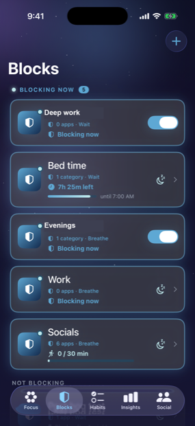
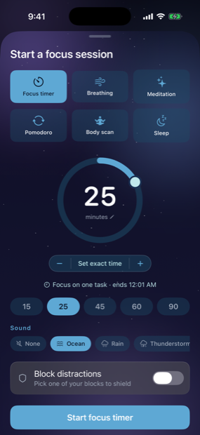
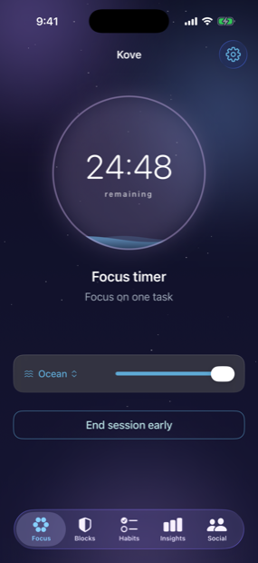
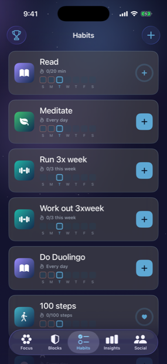
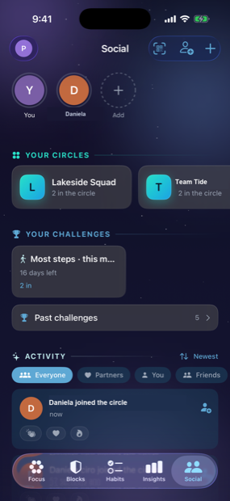
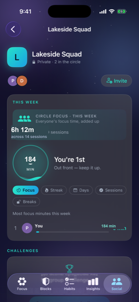

KOVE 〜
In development for iPhoneMost app blockers stop working the moment you really want them to. Kove is built for the part everyone skips — what happens when you try to get around it.

Swipe through the app. Every screen here is the real thing.
Focus time, sessions and streak up top; steps, distance, calories and active minutes below. Tap any metric to open its trend.

Blocking blocks float to the top. A schedule shows its countdown, a daily limit shows how much you’ve used, and anything paused says so.

A plain timer, breathing, meditation, pomodoro, a body scan, or wind-down. Set any length, pick a soundscape, and optionally shield your blocked apps for the session.

A countdown that also runs on your Lock Screen, so you don’t open the app to check it. Change the soundscape mid-session without stopping.

Daily and weekly goals, each with its own week strip. Health-backed habits fill themselves in from Apple Health — nothing to remember to tap.

Small, private, invite-only groups. Start a challenge and everyone in the circle is entered automatically — no codes to pass around.

Everyone’s focus time added together sits above the rankings. You can also rank by fewest breaks taken — where the lowest number wins.
Swipe, drag, or use the arrow keys.
Blocking is the enforcement. Focus sessions are the replacement. Habits are the progress. A partner is the reason you don’t quietly give up.
Block individual apps or whole categories through Apple’s Screen Time. Blocks keep working while Kove is closed, and they stack — if two blocks cover an app, both have to clear before it opens.
Six kinds: a focus timer, breathing, meditation, pomodoro, a body scan, and wind-down. Ambient soundscapes, optional voice guidance, and a live countdown on your Lock Screen.
Daily and weekly habits with streaks and earned badges. Health-backed habits — steps, active minutes, distance, sleep — fill themselves in from Apple Health, so there’s nothing to remember to tap.
Add an accountability partner and they see the slips, not just the wins: a missed habit, a broken streak, a block you talked your way past. Both people opt in, and either can end it.
You decide when a block switches on, and how hard it is to get out of — in advance, while you’re thinking clearly.
Any of these, and they stack.
Pick your friction, or pick none at all.
Locked In goes one step further: while the block is running you can’t edit it, switch it off, or delete it. You can still delete the whole app — no app on iPhone can stop that, and we won’t pretend otherwise — but the easy way out is gone.
Kove reads your iPhone’s own Screen Time and sorts it into distracting, neutral and productive automatically — you only correct it where it guesses wrong. Alongside it sits the number most screen-time apps never show you: how long you actually spent focused.
Three commitments that shape how the app is built.
Your blocks, habits, focus history, and screen-time data live in your own private iCloud. We have no copy and no way to read them.
Location-based blocking is evaluated entirely on your device. We don’t track you across other apps or websites, and there are no ads.
We measure how the app is used with anonymous analytics — counts and categories, never the content of what you block, track, or type.